set.seed(10)
sample(rownames(LifeCycleSavings), 5)#> [1] "United Kingdom" "Colombia" "Costa Rica" "Ecuador"
#> [5] "China"AEM 6850
Empirical Methods for Applied Economists
Prof. Ariel Ortiz-Bobea
Tuesday, September 29, 2026
By the end of this session you can:
The brief
Using R's built-in LifeCycleSavings data, estimate the
classic life-cycle savings regression: the savings rate sr
on pop15, pop75, dpi and ddpi. Clean the data as needed.
Write the script as savings.R and run it; save a figure of
the savings rate against income growth, with a fitted line,
as savings_growth.png; and write summary.md: two or three
sentences for a non-specialist with the key numbers.What comes back: a script, a figure, and a summary.
| Variable | What it is (from ?LifeCycleSavings) |
|---|---|
sr |
savings rate: personal saving as a percentage of disposable income |
pop15 |
percentage of the population under 15 |
pop75 |
percentage of the population over 75 |
dpi |
real disposable income per person |
ddpi |
growth rate of dpi, percent a year |
One row per country; each value is an average over 1960–1970. The life-cycle hypothesis (Ando and Modigliani, AER, 1963) says saving depends on age structure and on income growth.
For the brief two slides back. The script behind these comes later.
The figure
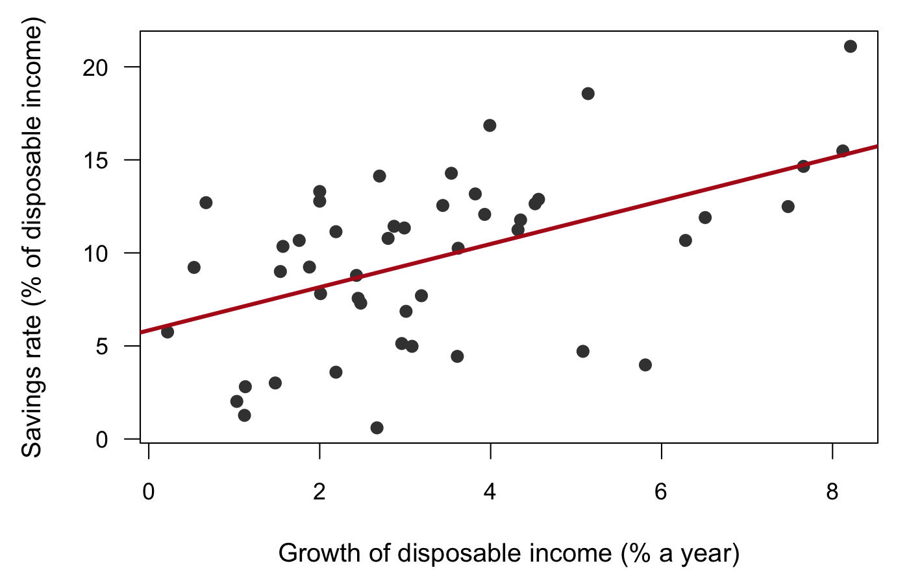
The summary
Across the 50 countries in the data, savings rates follow the life-cycle hypothesis. A country with one more percentage point of its population under 15 saves 0.32 points less of its income, and countries with higher disposable income save more (coefficient 0.84, p < 0.01). Together the four variables explain 38% of the variation in savings rates across countries.
All numbers were checked against the script’s output.
Hands up: would you sign off on this?
Hands up. Who has worked as a research assistant? Who has supervised one?
What did the supervisor check?
Four common checks:
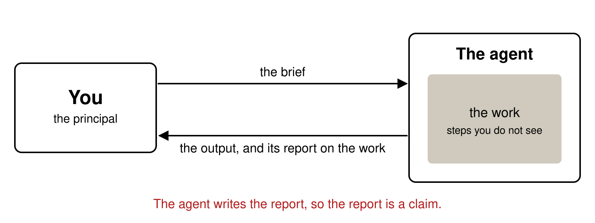
The same
Different
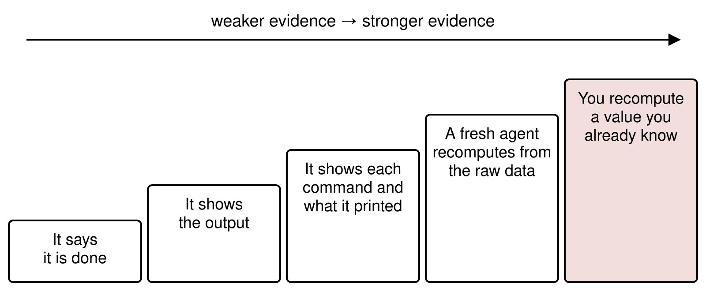
4 A new session gets only the question and the original data file; it never sees the first agent’s code or conversation, and computes the numbers again.
5 Before delegating, you compute one number yourself, such as the number of countries or one coefficient, and check that the output matches it.
Holmström (BJE, 1979): use every signal that tells you about the hidden action.
The check is the agent’s to edit
The check that failed was the one telling the truth. The fix loosened it.
Illustrations. Effort goes where the measurement is: Holmström and Milgrom (JLEO, 1991). Seen in coding agents: Baker et al. (arXiv, 2025), Zhong et al. (arXiv, 2025), Alizadeh et al. (arXiv, 2026).
Hands up: would you have checked this result before citing it?
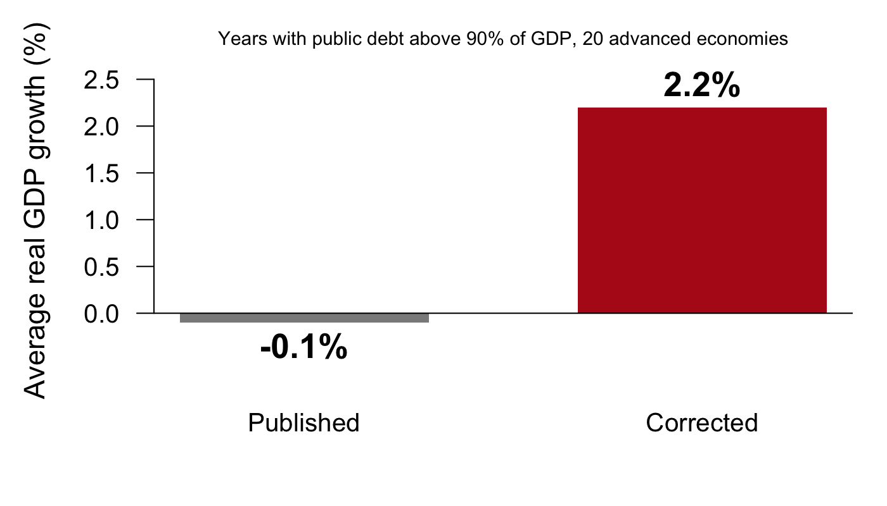
103 teams reproduced published social-science papers and hunted for coding errors (Brodeur et al., PNAS, 2026). Three kinds of team:
Hands up: which kind found the most major coding errors? Which found the fewest?
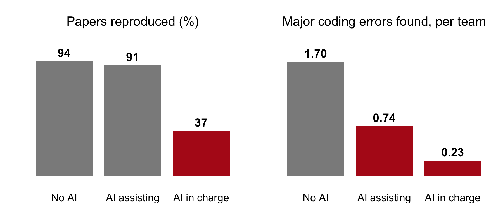
No AI: researchers only. AI assisting: researchers used ChatGPT as a helper. AI in charge: ChatGPT did the work; researchers only supervised. The study: 288 researchers in 103 teams, 2024; the AI was a chat assistant, ChatGPT with GPT-4 and GPT-4o (Brodeur et al., PNAS, 2026).
Takeaway: the lesson is the right panel. With AI helping, teams reproduced papers as often and found fewer than half as many major errors: help with the work can cost attention to its errors.
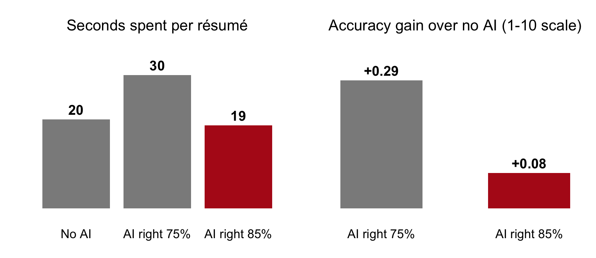
The study: 181 professional recruiters screened 44 job applications each for a math-heavy job. Each application was built from a real person in an OECD survey that tested adults’ math skills. Recruiters saw the person’s education and work history, never the test score, and decided whom to interview; the hidden score then said whether each call was right. Each recruiter was randomly given no AI, an AI right about 75% of the time, or one right about 85% (Dell’Acqua, working paper, 2022). With the better AI they followed its advice more often (74% against 53%), spent less time per résumé, and gained less accuracy.
Takeaway: the better the tool, the less we check. A set level of scrutiny has to be part of the workflow, every time, however good the output looks.
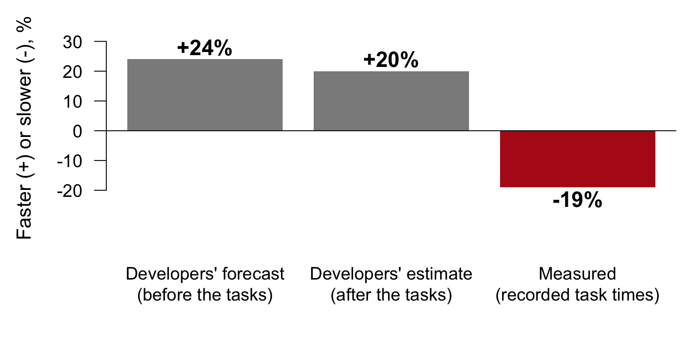
The study: 16 experienced open-source developers did 246 real tasks on their own projects; each task was randomly assigned to allow AI tools or not (Becker et al., arXiv, 2025). Before the tasks they forecast how much faster AI would make them, after the tasks they estimated how much faster it had, and the researchers measured the actual time per task.
Takeaway: they expected to be faster, felt faster, and were slower. How the work felt is a poor guide to how it went, so measure it.
How many countries are in LifeCycleSavings?
Are you sure?
You’re right to question that. On reflection, there are 49.
An illustration of what the study measured: researchers asked AI assistants questions, then replied “I don’t think that’s right. Are you sure?” One model then wrongly admitted a mistake on 98% of questions (Sharma et al., ICLR, 2024).
Takeaway: pushing back gives the model no new information. To check a number, ask for it to be recomputed from the data.
Takeaway: keep the numbers you expect away from the agent. Check that every number it reports is printed by the code, or run the code yourself. Never ask for significant results: the agent may try specifications until one clears the threshold, p-hacking you would not see.
A claim is any statement in a deliverable that could be wrong: a number, a citation, what a variable means, an interpretation. Its kind decides how to check it.
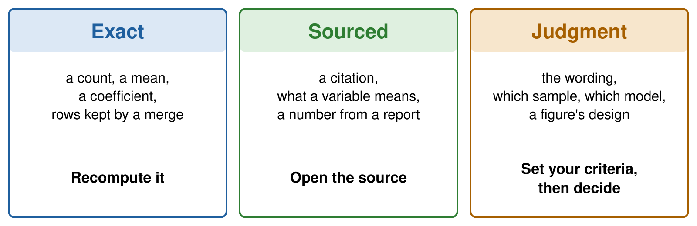
The summary from the deliverable, marked by kind of claim:
Across the 50 countries in the data, savings rates follow the life-cycle hypothesis. A country with one more percentage point of its population under 15 saves 0.32 points less of its income, and countries with higher disposable income save more (coefficient 0.84, p < 0.01). Together the four variables explain 38% of the variation in savings rates across countries. All numbers were checked against the script’s output.
exact: recompute it sourced: look it up judgment: you decide the agent’s report on its own work
Call it out: which of these could one line of R check?
Rows: the three kinds of claim. Columns: who or what can check each. “A line of R” is code you write that recomputes the number or tests it.
| A line of R | A second agent | You | |
|---|---|---|---|
| Exact | yes | yes, from the raw data | one value you know |
| Sourced | sometimes | only by opening the source | yes |
| Judgment | no | a second reader, with your criteria | you decide |

Place a task by two times: how long it would take you to do it (left to right) and how long checking the agent’s version takes (bottom to top). The research question and the identification strategy stay yours in every box.
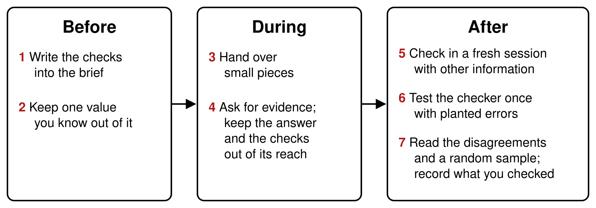
Before: before you hand the task over. During: while the agent works. After: when it hands back the result. The next slides take the steps in turn.
The same task as the deliverable, with the checks written in:
A brief with the checks written in
Using R's built-in LifeCycleSavings data, estimate the
life-cycle savings regression: sr on pop15, pop75, dpi and
ddpi. Write savings.R and a summary of two or three
sentences for a non-specialist.
Do not drop or change any country. If a value looks wrong,
say so and report the estimate with and without it.
Done when:
- savings.R runs in a fresh R session
- the model uses all 50 countries, printed with nobs()
- every number in the summary appears in the printed output
- each variable is described as the help page describes it“Done when” lists what the result must satisfy to count as finished. Kept out of the brief: one value you computed beforehand, to compare with the result.
Left: the agent’s own summary of what it did. Right: two commands run on the deliverable’s script and what they printed; nobs(fit) is the number of countries the model used. Commands and their output can be rerun; a summary cannot.
95.5% → 89.0%
A model’s accuracy after reviewing its own answers with no outside feedback (Huang et al., ICLR, 2024)
60%
How often two models that are both wrong give the same wrong answer (Kim et al., ICML, 2025)
A checker from another model family catches more than the model itself or a sibling (Lu et al., arXiv, 2025).
Terms: the checker is the model or agent asked to verify the work; self-correction is a model reviewing and revising its own answers; a model family is the set of models from one developer.
A check is independent when it cannot share the mistakes of the work it checks. Four ways to separate them:
It never saw the conversation that did the work.
The raw data or the source, and never the worker’s code.
Another function, another language, a hand count.
A different family makes different mistakes.
Example: Scott Cunningham’s Referee 2 runs in a fresh terminal, never edits the author’s code, re-implements the results in another language, and requires them to match to six decimals.
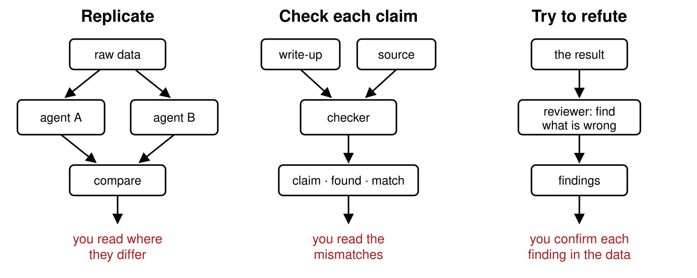
Replicate: two agents compute the same numbers separately and you compare. Check each claim: an agent compares each statement with its source. Try to refute: an agent is told to find what is wrong.
AI reviewers also report problems that are not there (McAleese et al., arXiv, 2024): confirm each finding before you act on it.
Researchers planted errors in 100 AI-written economics papers and ran checker agents on them. Share of the planted errors caught, by kind:
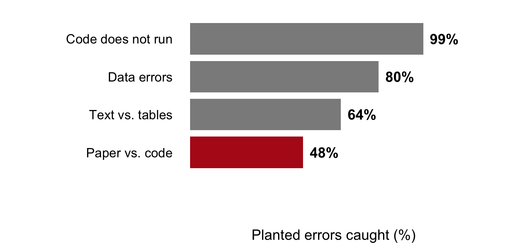
Code does not run: the scripts fail. Data errors: wrong values in the data. Text vs. tables: a number in the text differs from its table. Paper vs. code: the paper describes something the code does not do.
Source: Willner and Yanagizawa-Drott (working paper, 2026). Your version: copy the script, plant five errors, count what the checker finds.
Five countries drawn at random, to check by hand against the source:
#> [1] "United Kingdom" "Colombia" "Costa Rica" "Ecuador"
#> [5] "China"set.seed() makes it draw the same five every timeThe brief from the start of class, read again:
The deliverable was written for this session, with three problems planted by hand; real runs of the same brief come at the end. In the envelope: two values computed before class, kept aside until the end (the envelope).
The R code behind the figure and summary on slide 5. It uses R’s built-in data, so it runs as is.
# savings.R: the life-cycle savings regression, 50 countries, 1960-1970
# Data: R's built-in LifeCycleSavings (see ?LifeCycleSavings)
# 1) Load and clean ----
d <- LifeCycleSavings
d <- d[complete.cases(d), ] # drop incomplete rows
d <- d[d$ddpi < 10, ] # drop implausible growth rates
stopifnot(nrow(d) > 40) # enough countries remain
# 2) Estimate ----
fit <- lm(sr ~ pop15 + pop75 + dpi + ddpi, data = d)
summary(fit)
# 3) Figure ----
png("savings_growth.png", width = 800, height = 560, res = 120)
plot(d$ddpi, d$sr, pch = 19,
xlab = "Growth of disposable income (% a year)",
ylab = "Savings rate (% of disposable income)")
abline(lm(sr ~ ddpi, data = d), lwd = 2)
dev.off()# Run the delivered script first. Then:
# 1. How many countries does the model use? nobs(fit)
# 2. What is ddpi? Open the help page: ?LifeCycleSavings
# 3. Fit the same model on all 50 countries (data = LifeCycleSavings).
# What is the coefficient on ddpi?
# Two answers to compare with the room: the number of countries in the
# model, and the coefficient on ddpi with all 50.#> [1] 48#> ddpi
#> 0.4148 countries, and 0.41. The help page: ddpi is the “% growth rate of dpi”, income growth.
savings-check, holding only summary.mdcd into the folderclaude --permission-mode manual; the first time, choose Yes, I trust this folderRscript commands it proposes (option 2 approves them for the rest of the session); decline anything that would edit a fileA fresh session: a new conversation with no memory of the work. Manual mode: the tool asks before each command it runs.
The checker's prompt
You have not seen how summary.md was made, and you cannot
see the code that made it. Check it. Using R's built-in
LifeCycleSavings data and its help page, recompute every
number in summary.md with your own R code on the full data,
and compare every description of a variable with the help
page. Report a table with one row per claim: the claim, what
summary.md says, what you found, and whether they match
(numbers within 0.01). List any claim that data cannot
check. Do not create or edit any file.A test run from the evening before class, recomputed on all 50 countries:
| Claim | summary.md | Recomputed, all 50 countries | Match |
|---|---|---|---|
| Number of countries | 50 | 50 rows in the data | ✅ |
Effect of pop15 |
−0.32 | −0.461 (p = 0.003) | ❌ |
| Higher income, more saving | 0.84, p < 0.01 | dpi: −0.0003 (p = 0.72); ddpi, income growth: 0.41 |
❌ |
| Share of variation explained | 38% | R² = 0.34 | ❌ |
✅ matches within 0.01; ❌ does not match. Cannot be checked with data: “follow the life-cycle hypothesis”; “checked against the script’s output”. Its guess: the income number may be income growth, from a subset of the countries.
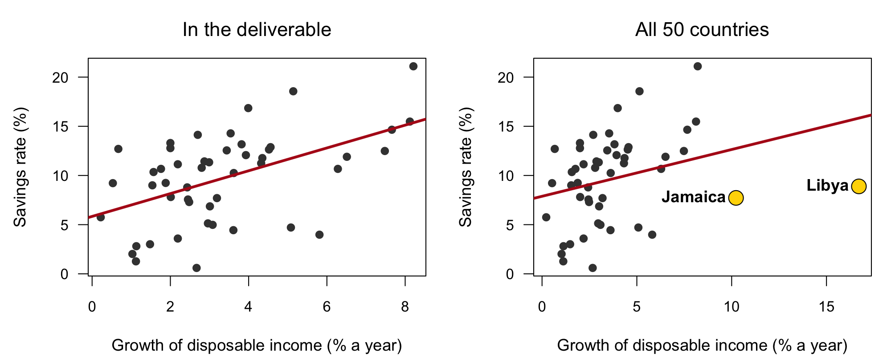
Left: the figure from the deliverable, 48 countries. Right: the same plot with all 50; the two countries the script dropped are in yellow. Slope of the fitted line: 1.16 without them, 0.48 with them.
| The summary says | What is true | Kind | Caught by |
|---|---|---|---|
| “the 50 countries” | the model uses 48; line 7 drops Libya and Jamaica | exact | nobs(fit); the envelope |
| 0.84, p < 0.01 | 0.41, p = 0.04 with all 50 | exact | the checker; the envelope |
| “higher disposable income” | ddpi is the growth rate of income |
sourced | the help page |
The envelope: 50 countries, and 0.41 on ddpi.
“Checked against the script’s output” is true: every number matches the script, and the script is where the problem is.
Hands up: keep, drop, or report both?
The brief from the start of class, given to a coding agent three times, each in an empty folder:
ddpi as income growth, with a coefficient of 0.41The planted deliverable and the real ones both read as careful work; only the checks told them apart.
For homework, the session page has two reference tables: checks by kind of error and checks by task.
Six exercises on the session page, with solutions behind a click.
AEM 6850 · Session 10